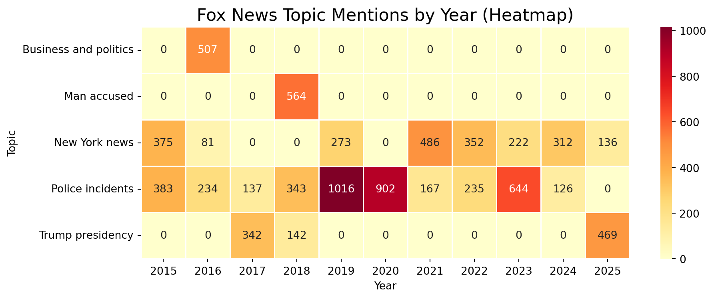

topic count
177 police man say 1190
158 new york new york 1156
156 new new york york 1081
138 man police florida 1014
274 trump president president trump 953
178 police man shooting 755
190 police say police say 702
99 html man accused 564
103 html new latest 544
176 police man report 526Topic Modeling
Introduction
This analysis examines topic mentions across different news networks, with a focus on identifying the most common topics and comparing coverage patterns. We’ve collected data from major news networks and processed it to extract meaningful insights about their coverage priorities.
Topic Mapping and Classification
First, we need to define how we’ll classify the raw topic data into more meaningful categories. Our mapping function handles the messy topic data by grouping related terms into cleaner categories:
Fox News Topic Distribution
Now we’ll visualize how Fox News distributes its coverage across our identified topic categories. First, we will look at the top ten topics identified.
Topics were grouped as follows: Police incidents combined mentions like “police man say” and “man police florida”; New York news combined messy duplicates like “new york new york”; Trump presidency captured “trump president president trump”; Man accused cleaned “html man accused” from scraping artifacts; and Business and politics represented “html business president”. This condenses the top 10 topics into 5 cleaned topics.
The stacked bar chart below shows the relative proportion of each topic in overall Fox News coverage:
Code
def plot_cleaned_stacked_bar(source_name):
source_data = combined_data[combined_data['source'] == source_name].copy()
source_data['clean_topic'] = source_data['topic'].apply(map_to_clean_topic)
source_data = source_data.dropna(subset=['clean_topic'])
source_total = source_data.groupby('clean_topic')['count'].sum().reset_index()
if source_total.empty:
print(f"No matching cleaned topics for {source_name}")
return
fig, ax = plt.subplots(figsize=(8, 5))
ax.barh(['All Topics'], source_total['count'].sum(), color='lightgray', edgecolor='black')
start = 0
colors = ['#e41a1c', '#377eb8', '#4daf4a', '#984ea3', '#ff7f00']
for i, row in source_total.iterrows():
ax.barh(
['All Topics'],
row['count'],
left=start,
label=row['clean_topic'],
color=colors[i % len(colors)]
)
start += row['count']
plt.title(f'Overall Topic Mentions ({source_name})', fontsize=16)
plt.xlabel('Total Mentions')
plt.legend(title='Topic', bbox_to_anchor=(1.05, 1), loc='upper left')
plt.tight_layout()
plt.show()
plot_cleaned_stacked_bar('Fox')The chart reveals interesting patterns in Fox News coverage. We can see a substantial focus on police incidents and New York news, with additional coverage devoted to the Trump presidency. The distribution offers insights into editorial priorities and audience interests.
Topic Coverage Trends Over Time
To understand how Fox News’ coverage has evolved, we’ll create a heatmap showing topic mentions by year. This visualization helps identify shifting priorities in news coverage:
Code
import seaborn as sns
fox_only = combined_data[combined_data['source'] == 'Fox'].copy()
fox_only['clean_topic'] = fox_only['topic'].apply(map_to_clean_topic)
fox_only = fox_only.dropna(subset=['clean_topic'])
fox_yearly = fox_only.groupby(['year', 'clean_topic'])['count'].sum().reset_index()
heatmap_data = fox_yearly.pivot(index='clean_topic', columns='year', values='count').fillna(0)
plt.figure(figsize=(10, 4))
sns.heatmap(heatmap_data, cmap='YlOrRd', annot=True, fmt='.0f', linewidths=0.5)
plt.title('Fox News Topic Mentions by Year (Heatmap)', fontsize=16)
plt.xlabel('Year')
plt.ylabel('Topic')
plt.tight_layout()
plt.show()
The heatmap provides a temporal dimension to our analysis, showing how topic coverage has changed over years. Particularly noteworthy are the fluctuations in police incident reporting and the coverage of the Trump presidency, which naturally varied with political cycles.
MSNBC News Topic Distribution
Now we’ll visualize how MSNBC News distributes its coverage across our identified topic categories. First, we will look at the top ten topics identified.
topic count
230 trump donald donald trump 1711
35 biden joe joe biden 532
275 trump president president trump 525
162 obama president president obama 425
62 court supreme supreme court 376
65 covid vaccine covid vaccine 373
233 trump election coronavirus 363
70 desantis florida ron 347
296 trump ukraine giuliani 344
293 trump trump impeachment impeachment 334We grouped similar MSNBC topics together by combining all mentions related to Trump, including elections, impeachment, and Ukraine, into a single Trump-related category. Separate categories were created for Biden, Obama, Supreme Court, COVID vaccine, and DeSantis to better reflect the main themes while reducing repetition across topics.
Code
import matplotlib.pyplot as plt
# 1. Define NEW topic mapping for MSNBC
def map_to_clean_topic_msnbc(topic):
topic = topic.lower()
if any(x in topic for x in ['trump donald donald trump', 'trump president president trump', 'trump election coronavirus', 'trump ukraine giuliani', 'trump trump impeachment impeachment']):
return 'Trump-related'
elif 'biden joe joe biden' in topic:
return 'Biden-related'
elif 'obama president president obama' in topic:
return 'Obama-related'
elif 'court supreme supreme court' in topic:
return 'Supreme Court'
elif 'covid vaccine covid vaccine' in topic:
return 'COVID vaccine'
elif 'desantis florida ron' in topic:
return 'DeSantis-related'
else:
return None
# 2. Define plotting function
def plot_cleaned_stacked_bar_msnbc(source_name):
source_data = combined_data[combined_data['source'] == source_name].copy()
source_data['clean_topic'] = source_data['topic'].apply(map_to_clean_topic_msnbc)
source_data = source_data.dropna(subset=['clean_topic'])
source_total = source_data.groupby('clean_topic')['count'].sum().reset_index()
if source_total.empty:
print(f"No matching cleaned topics for {source_name}")
return
fig, ax = plt.subplots(figsize=(8, 5))
ax.barh(['All Topics'], source_total['count'].sum(), color='lightgray', edgecolor='black')
start = 0
colors = ['#e41a1c', '#377eb8', '#4daf4a', '#984ea3', '#ff7f00', '#a65628'] # 6 colors
for i, row in source_total.iterrows():
ax.barh(
['All Topics'],
row['count'],
left=start,
label=row['clean_topic'],
color=colors[i % len(colors)]
)
start += row['count']
plt.title(f'Overall Topic Mentions ({source_name})', fontsize=16)
plt.xlabel('Total Mentions')
plt.legend(title='Topic', bbox_to_anchor=(1.05, 1), loc='upper left')
plt.tight_layout()
plt.show()
# 3. Plot it for MSNBC
plot_cleaned_stacked_bar_msnbc('MSNBC')On MSNBC, Trump-related topics overwhelmingly dominated overall mentions.
Topic Coverage Trends Over Time
To understand how Fox News’ coverage has evolved, we’ll create a heatmap showing topic mentions by year. This visualization helps identify shifting priorities in news coverage:
Code
import matplotlib.pyplot as plt
import seaborn as sns
# 1. Map topics (reuse the same function)
def map_to_clean_topic_msnbc(topic):
topic = topic.lower()
if any(x in topic for x in ['trump donald donald trump', 'trump president president trump', 'trump election coronavirus', 'trump ukraine giuliani', 'trump trump impeachment impeachment']):
return 'Trump-related'
elif 'biden joe joe biden' in topic:
return 'Biden-related'
elif 'obama president president obama' in topic:
return 'Obama-related'
elif 'court supreme supreme court' in topic:
return 'Supreme Court'
elif 'covid vaccine covid vaccine' in topic:
return 'COVID vaccine'
elif 'desantis florida ron' in topic:
return 'DeSantis-related'
else:
return None
# 2. Prepare MSNBC data
msnbc_only = combined_data[combined_data['source'] == 'MSNBC'].copy()
msnbc_only['clean_topic'] = msnbc_only['topic'].apply(map_to_clean_topic_msnbc)
msnbc_only = msnbc_only.dropna(subset=['clean_topic'])
# 3. Group by year and clean topic
msnbc_yearly = msnbc_only.groupby(['year', 'clean_topic'])['count'].sum().reset_index()
# 4. Pivot for heatmap
heatmap_data = msnbc_yearly.pivot(index='clean_topic', columns='year', values='count').fillna(0)
# 5. Plot heatmap
plt.figure(figsize=(10, 4))
sns.heatmap(heatmap_data, cmap='YlOrRd', annot=True, fmt='.0f', linewidths=0.5)
plt.title('MSNBC Topic Mentions by Year (Heatmap)', fontsize=16)
plt.xlabel('Year')
plt.ylabel('Topic')
plt.tight_layout()
plt.show()On MSNBC, Trump-related coverage dominated between 2019 and 2020, peaking sharply during the impeachment and election periods. Biden-related mentions appeared mainly in 2020, while COVID vaccine and DeSantis-related topics emerged later in 2020 and 2023, respectively. Mentions of Obama and the Supreme Court were more limited and concentrated earlier in the decade.
ABC News Topic Distribution
Now we’ll visualize how ABC News distributes its coverage across our identified topic categories. First, we will look at the top ten topics identified.
topic count
211 police man killed 813
169 man police shooting 803
214 police man shooting 728
210 police man death 599
209 police man dead 542
153 man dies year 541
208 police man black 520
165 man police death 520
188 obama court latest 519
106 judge trumps house 502For ABC, the majority of top topics were grouped under Police incidents, combining various mentions of police shootings, deaths, and related events. General deaths (unrelated to police) were kept separate, while mentions of Obama and Trump were grouped into their own categories based on political coverage.
Code
# 1. Define new mapping function for ABC
def map_to_clean_topic_abc(topic):
topic = topic.lower()
if any(x in topic for x in [
'police man killed', 'man police shooting', 'police man shooting',
'police man death', 'police man dead', 'man police death', 'police man black']):
return 'Police incidents'
elif 'man dies year' in topic:
return 'General deaths'
elif 'obama court latest' in topic:
return 'Obama-related'
elif 'judge trumps house' in topic:
return 'Trump-related'
else:
return None
import matplotlib.pyplot as plt
def plot_cleaned_stacked_bar_abc(source_name):
source_data = combined_data[combined_data['source'] == source_name].copy()
source_data['clean_topic'] = source_data['topic'].apply(map_to_clean_topic_abc)
source_data = source_data.dropna(subset=['clean_topic'])
source_total = source_data.groupby('clean_topic')['count'].sum().reset_index()
if source_total.empty:
print(f"No matching cleaned topics for {source_name}")
return
fig, ax = plt.subplots(figsize=(8, 5))
ax.barh(['All Topics'], source_total['count'].sum(), color='lightgray', edgecolor='black')
start = 0
colors = ['#e41a1c', '#377eb8', '#4daf4a', '#984ea3'] # 4 categories, 4 colors
for i, row in source_total.iterrows():
ax.barh(
['All Topics'],
row['count'],
left=start,
label=row['clean_topic'],
color=colors[i % len(colors)]
)
start += row['count']
plt.title(f'Overall Topic Mentions ({source_name})', fontsize=16)
plt.xlabel('Total Mentions')
plt.legend(title='Topic', bbox_to_anchor=(1.05, 1), loc='upper left')
plt.tight_layout()
plt.show()
# Call it
plot_cleaned_stacked_bar_abc('ABC')Topic Coverage Trends Over Time
To understand how ABC News’ coverage has evolved, we’ll create a heatmap showing topic mentions by year. This visualization helps identify shifting priorities in news coverage:
Code
import matplotlib.pyplot as plt
import seaborn as sns
# 1. Map topics (already defined earlier as map_to_clean_topic_abc)
# 2. Prepare ABC data
abc_only = combined_data[combined_data['source'] == 'ABC'].copy()
abc_only['clean_topic'] = abc_only['topic'].apply(map_to_clean_topic_abc)
abc_only = abc_only.dropna(subset=['clean_topic'])
# 3. Group by year and cleaned topic
abc_yearly = abc_only.groupby(['year', 'clean_topic'])['count'].sum().reset_index()
# 4. Pivot for heatmap
heatmap_data = abc_yearly.pivot(index='clean_topic', columns='year', values='count').fillna(0)
# 5. Plot heatmap
plt.figure(figsize=(10, 4))
sns.heatmap(heatmap_data, cmap='YlOrRd', annot=True, fmt='.0f', linewidths=0.5)
plt.title('ABC Topic Mentions by Year (Heatmap)', fontsize=16)
plt.xlabel('Year')
plt.ylabel('Topic')
plt.tight_layout()
plt.show()On ABC, Police incidents dominated coverage from 2016 onward, peaking sharply in 2022. General deaths and Obama-related mentions were mainly concentrated around 2016–2017, while Trump-related coverage appeared notably later in 2025.
Conclusion
Code
# Filter Trump topics
trump_mentions = combined_data[combined_data['topic'].str.contains('trump', case=False, na=False)]
# Filter Hillary, Biden, OR Kamala topics
hbk_mentions = combined_data[
combined_data['topic'].str.contains('hillary', case=False, na=False) |
combined_data['topic'].str.contains('biden', case=False, na=False) |
combined_data['topic'].str.contains('kamala', case=False, na=False)
]
# Group by source only (no year)
trump_counts = trump_mentions.groupby('source').size().reset_index(name='count_trump')
hbk_counts = hbk_mentions.groupby('source').size().reset_index(name='count_hbk')
# Merge Trump and Hillary/Biden/Kamala counts
merged = pd.merge(trump_counts, hbk_counts, on='source', how='outer').fillna(0)
# Plot
import matplotlib.pyplot as plt
import numpy as np
sources = merged['source'].unique()
x = np.arange(len(sources)) # the label locations
width = 0.35 # width of the bars
plt.figure(figsize=(8, 6))
plt.bar(x - width/2, merged['count_trump'], width=width, label='Trump', color='red', alpha=0.8)
plt.bar(x + width/2, merged['count_hbk'], width=width, label='Hillary/Biden/Kamala', color='blue', alpha=0.8)
plt.title('Overall Mentions of Trump vs Hillary/Biden/Kamala by News Source', fontsize=16)
plt.xlabel('News Source')
plt.ylabel('Total Mentions')
plt.xticks(x, sources)
plt.legend()
plt.tight_layout()
plt.show()